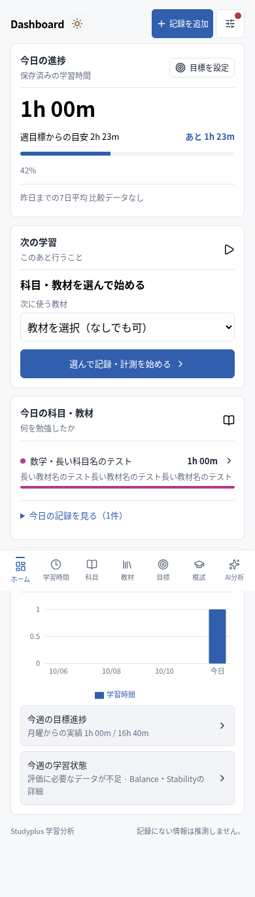
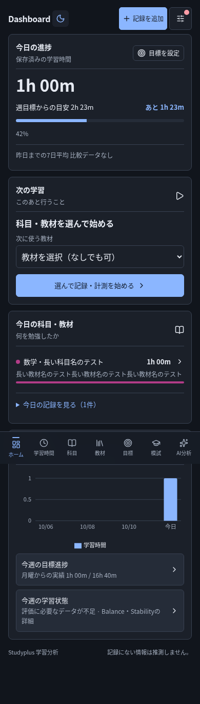
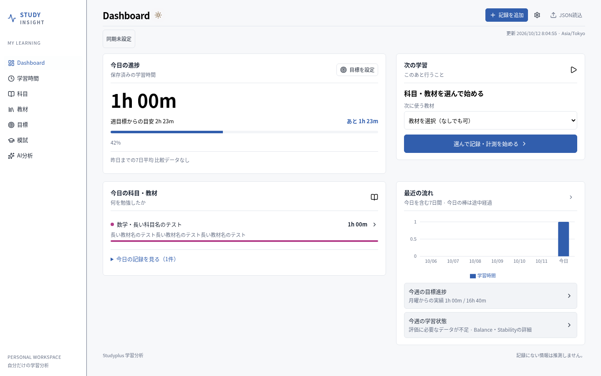
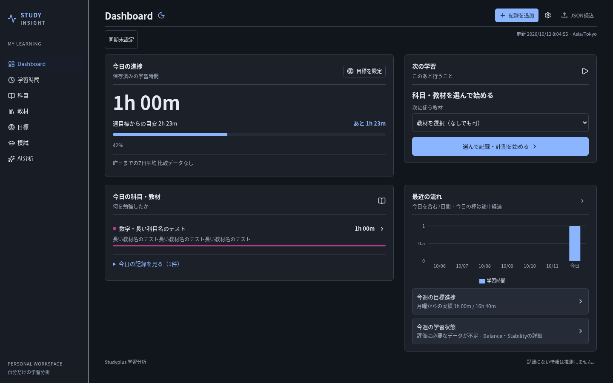

ページ名の横の太陽・月・モニターで現在の設定を示し、押すたびにライト→ダーク→システムの順に切り替えます。システムはデバイスの設定に自動で追従します。
以下は合成データを使った隔離Chromiumの確認画像です。本番の学習記録・同期先には触れていません。




360／390／430／1280／1440pxの主要7ページを両モードで確認。切替・保存／再読込・システム追従・別タブ・キーボード・入力・実Document PiP・ストレージ拒否を確認しています。学習Dataが変化しないことと、科目色の保持も検証しました。
iPhone／Windows実機・file://直接起動は未確認です。